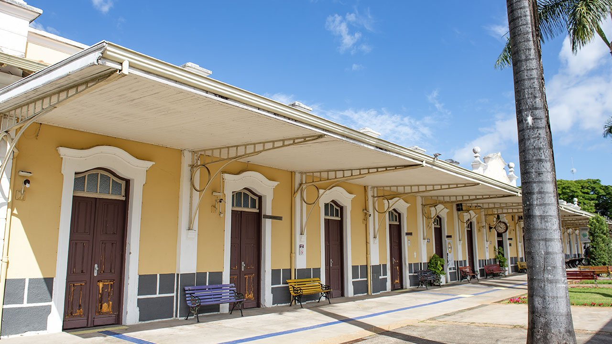
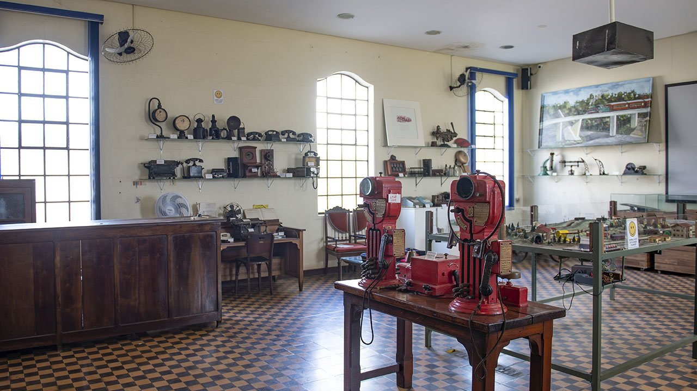
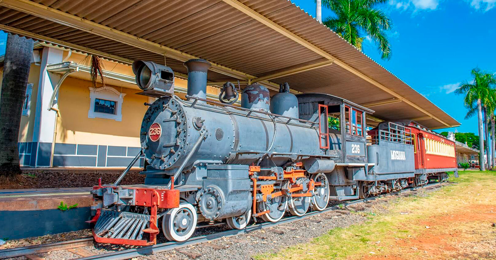

![Vista aérea panorâmica da cidade de Jaguariúna, Brasil, em um dia claro e ensolarado. A imagem mostra o centro urbano cercado por áreas verdes. No centro, destacam-se casas e edifícios de baixa altura com telhados de cerâmica, interligados por ruas e avenidas. Um rio sinuoso atravessa a paisagem, ladeado por vegetação densa. Na parte inferior esquerda, há construções próximas a uma área de campo. A paisagem se estende ao fundo, revelando áreas residenciais, campos abertos e florestas, que se misturam no horizonte.](../img/jaguariuna/visao_aerea.jpg "Visao aerea")
Introdução e Cultura
Jaguariúna é uma cidade do interior de São Paulo com cerca de 60 mil habitantes, reconhecida pelo equilíbrio entre tradição histórica e modernidade urbana. O planejamento da cidade promove qualidade de vida, mobilidade, segurança e áreas verdes, fazendo de Jaguariúna um local atrativo tanto para residentes quanto para visitantes. A cidade preserva seu patrimônio histórico, com casarões coloniais, igrejas antigas e museus que refletem a trajetória cultural e econômica da região.
O cenário cultural da cidade é rico e diversificado, oferecendo teatros, centros culturais, bibliotecas e espaços de convivência que promovem atividades artísticas, musicais e literárias. Jaguariúna realiza festivais tradicionais e eventos culturais que atraem turistas de todo o estado, valorizando a arte local e a participação comunitária. A cidade também promove atividades de educação patrimonial, garantindo a preservação da história e a transmissão de conhecimento às novas gerações.
O urbanismo da cidade integra áreas residenciais, comerciais e culturais, com parques, praças e ciclovias que favorecem o lazer, a prática esportiva e a interação social. Jaguariúna investe ainda em tecnologia e inovação, conectando educação, pesquisa e desenvolvimento econômico em projetos que fortalecem a cidade como polo de criatividade e sustentabilidade.
Turismo, Passeios e Gastronomia
Entre os principais pontos turísticos, destacam-se a Estação Ferroviária, o Parque Santa Maria, a Igreja Matriz e o Centro Histórico. Jaguariúna oferece passeios gratuitos em praças, parques e museus, além de eventos culturais que promovem música, dança e artesanato. A cidade também realiza festivais anuais que combinam tradição, cultura e entretenimento, atraindo turistas de todas as regiões.
A gastronomia local é diversificada, com restaurantes que oferecem pratos típicos da culinária paulista, opções internacionais e confeitarias tradicionais. Bares e cafés complementam a experiência cultural, proporcionando momentos de lazer e socialização. Eventos gastronômicos promovem produtos locais, fortalecendo o turismo e a economia criativa, enquanto feiras e mercados comunitários incentivam a valorização de ingredientes e receitas regionais.
O turismo gastronômico se integra à experiência cultural da cidade, permitindo que moradores e visitantes conheçam a tradição e a inovação culinária de Jaguariúna, combinando sabores, história e lazer em um único destino.
Economia, Inovação e Curiosidades
A economia de Jaguariúna é baseada em comércio, serviços, turismo e pequenas indústrias, destacando-se por seu planejamento urbano inteligente e iniciativas de inovação tecnológica. A cidade investe em infraestrutura moderna, educação e projetos sustentáveis que estimulam o desenvolvimento econômico de forma equilibrada, promovendo qualidade de vida para a população.
Projetos de inovação incluem centros de pesquisa, laboratórios, incubadoras de empresas e ações voltadas para tecnologia e empreendedorismo. O foco em sustentabilidade e urbanismo planejado garante que Jaguariúna se mantenha competitiva e acolhedora, promovendo integração entre população, governo e setor privado.
Entre as curiosidades, Jaguariúna é conhecida pelo tradicional Festival do Fervo e pelo turismo ferroviário, que preserva o patrimônio histórico e conecta a cidade a experiências culturais únicas. A cidade também é destaque em rankings de qualidade de vida e inovação, consolidando sua posição como uma das cidades inteligentes do estado de São Paulo.